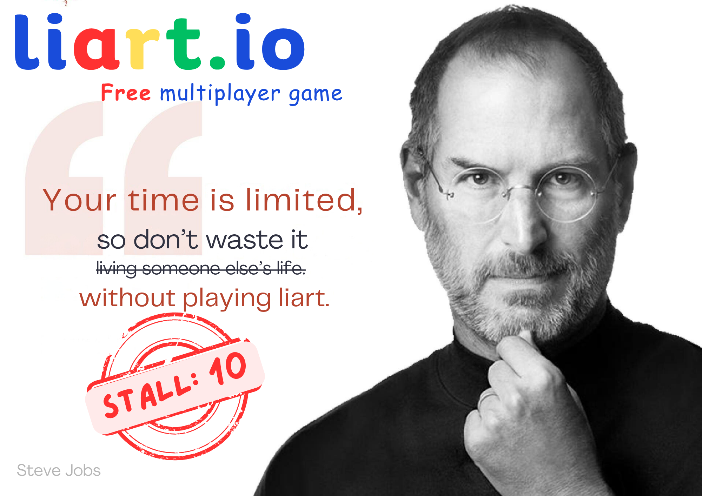
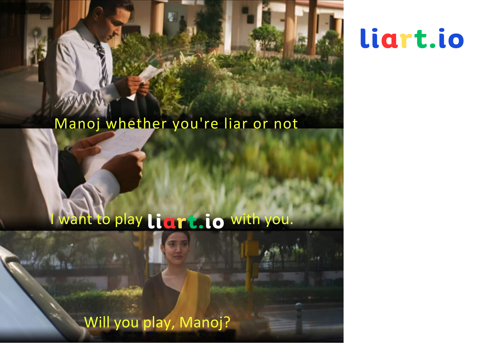
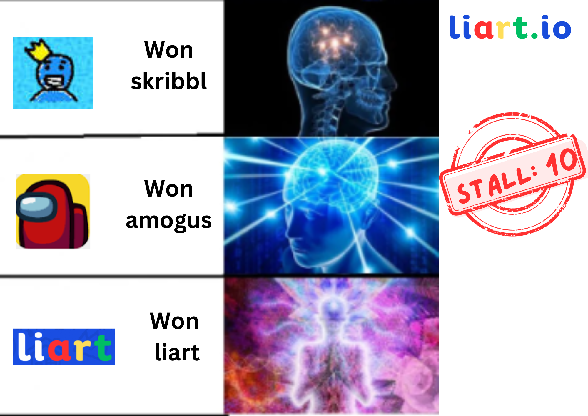
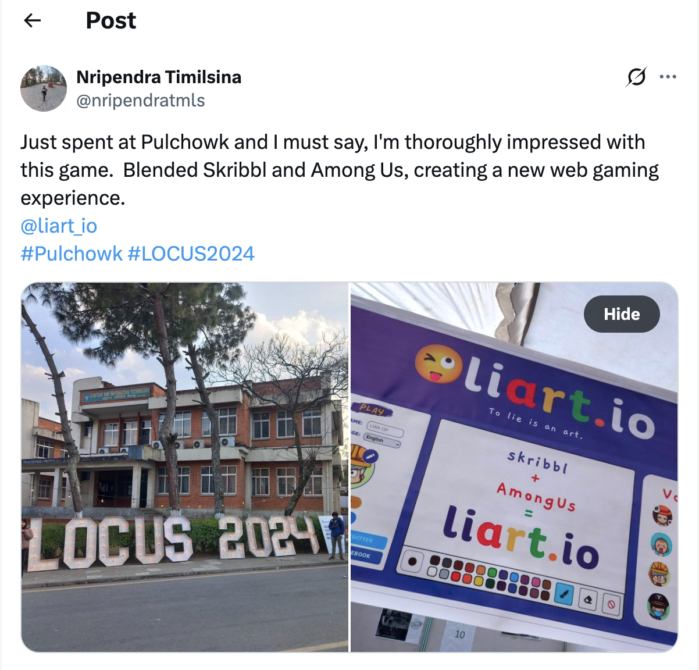

Liart.io
The first version of Liart.io was not a website. It was a blank Google Jamboard, a Google Meet call, and a series of Facebook messages I sent by hand.
I had first seen the idea for the game in a YouTube video. Games like Among Us and skribbl.io were becoming popular then, and I thought it would be fun to make something in the same general direction: a drawing game in which one player did not know what everyone else was drawing.
At the time, I wanted to build something, though I was not sure what. When I told Pramish, a senior from my college and one of my mentors, about the idea, he suggested that I test it in the smallest way possible before building anything. He also suggested that I read The Mom Test and Zero to One.
I invited a few classmates to a Google Meet call and opened a blank Jamboard that everyone could draw on. Before each round, I sent the same secret word to every player through Facebook Messenger, except for one person, who was told that they were the liar.
Then they started drawing.
I had to do everything the software would eventually do. I chose the liar, sent the words, kept track of the rounds, and switched constantly between Jamboard, Meet, and Messenger. It was awkward for me.
But the players did not care.
They were too busy laughing at the drawings, accusing one another, and trying to draw something useful without making the word too obvious. They played three rounds.
That was enough to learn something important. The setup was inconvenient, but the game was fun.
In fact, the inconvenience was mostly on my side. The players were already having something close to the experience I had imagined. I was simply acting as the game server.
I tried the same setup later with my brothers, cousins, and a few relatives. They enjoyed it too. When two different groups had fun despite the awkward setup, it seemed less likely that the first test had worked by accident.
So I decided to turn it into a real browser game.
The game also changed as we tested it. The final version was not exactly like the one from the original video. It became closer to A Fake Artist Goes to New York, though we changed parts of the experience and adapted it for playing in a browser.
I asked a friend who was much better at coding it to work on the game with me. I worked mainly on the interface, the rules, the flow of each round, and how the game should feel to the players. I also watched people play, noticed where they became confused or bored, and changed the game accordingly. He handled much of the engineering required to make the multiplayer game work.
Eventually, we replaced Jamboard with our own drawing interface, Messenger with the game lobby, and me with software.
That became Liart.io.
LOCUS was one month away
Around the same time, LOCUS was coming up in about a month.
LOCUS is the annual technology festival at Pulchowk Campus. A lot of people visit it, and students get to exhibit the things they have built. I knew that if we could get Liart ready by then, it would be a much better launch than putting the link online and asking a few friends to try it.
So LOCUS became our deadline.
After college, we would work on the game. Neither of us had built something like this before, and one month was not a lot of time. But having an actual event ahead of us made the work feel concrete. We were not building toward some vague launch date. On the first day of LOCUS, strangers were going to sit down and try whatever version we had managed to finish.
As the event got closer, I also started thinking about how we would get people to the stall.
There are many projects at LOCUS, and simply having a working project does not mean people will notice it. I requested a stall close to the entrance, just after the sponsor stalls, because almost everyone entering the exhibition would pass through that area. I also wanted a stall number people could remember easily.
We got Stall 10.
The game needed four people to play together, which meant we needed four laptops at the stall. We did not have them, so I asked friends from the college hostel if we could borrow theirs. A few juniors also agreed to help us manage the stall, explain the game, and handle the crowd.
Then we started making memes.
We printed posters around Liart and Stall 10 and pasted them all over the campus. They were near the entrance, in the hallways, and even close to the toilets. Some of them were intentionally silly, like the Steve Jobs poster.



The posters did not explain the game. They mostly repeated Liart.io and pointed people toward Stall 10.
That worked better than explaining everything. People would see the name several times and become curious about what was at the stall. Some came to us specifically because they had been seeing the memes everywhere.

Once a group started playing, the game began attracting people on its own.
Four people would sit down to play, while others stood behind them and watched. People were laughing, accusing each other, and waiting for their turn. Some came back later with a different group of friends and played again.
The setup itself was far from perfect. The internet would sometimes slow down or stop working. The game broke a few times. One of the borrowed laptops had almost no working battery, so it had to remain connected to the charger the entire time. If someone moved the cable even slightly, the laptop would turn off in the middle of a game.
At the time, every one of these problems felt urgent. Looking back, they are some of the parts I remember most fondly. We would fix whatever had broken, restart the laptop, explain what happened to the people waiting, and continue.
We also kept a QR code for our Discord server at the stall. People could scan it, join the community, and later find others to play with.
The first day was mostly a live test for us.
We watched where people became confused, where the energy dropped, what made them laugh, and which moments made the crowd react. We asked players for feedback and kept noting down the things we could improve.
That night, I read Hooked: How to Build Habit-Forming Products. I was trying to understand what small things made an experience feel satisfying and made people want to continue.
We added sounds, confetti, clearer feedback, and small moments of celebration. These were not major features, but at the stall they made a visible difference. When the game responded properly to something happening, the players reacted, and the crowd behind them reacted as well.
I slept for around two hours that night.
The next morning, we came back with the changed version and started watching people play again.
There was no need to arrange a user interview for another week. The users were sitting right in front of us.
What surprised me was that the games did not stop when the event closed for the day. They were playing with their own friends at night.
I had Microsoft Clarity installed, so I could see those sessions happening. After returning home, I would open Clarity and watch people move through the game. Some struggled with things we thought were obvious. Some played several rounds. Some brought in a group of friends and stayed much longer than I expected.
Watching those recordings was fun in a different way from standing at the stall. At LOCUS, there was always noise, a queue, an internet problem, or something else to manage. Through Clarity, I could quietly watch how people behaved when none of us was standing beside them explaining the game.
There is something special about watching strangers become completely absorbed in something that had existed only in your head a few weeks earlier.
Counting both the people who played at LOCUS and the sessions that continued afterward, Liart reached around 1,000 players during the launch. More than 50 people joined the Discord server. Our stall became the most visited one at the event, and we won Best Software Project. Liart also appeared in a YouTube video covering LOCUS, where we were one part of the broader event coverage.
We shared part of the prize with the juniors who helped us run the stall. By that point, it did not feel like something only the two of us had built. Friends had lent us laptops, juniors had managed the crowd, people had helped paste posters, and the players themselves had made the stall exciting.
A month earlier, Liart had been a blank Jamboard, a Google Meet call, and secret words I was manually sending through Messenger.
Now people were waiting for their turn at the stall, coming back with their friends, and continuing to play after they went home.
And then we stopped
For a few weeks after LOCUS, we continued making changes based on what people wrote in Discord. There were still things to fix and ideas we wanted to try.
But college quickly took over again.
Our semester exams were approaching. We also had to work on our minor project, where I was building a virtual shoe try-on system with another group of friends. The friend who built Liart with me had his own projects too.
Slowly, Liart stopped being the thing we worked on after college.
A few weeks after the launch, we shut it down.
Looking back, I wish I had tried harder to market it online. We had learned how to get attention inside a physical event, but I never seriously experimented with how to find players on the internet. I could have posted in gaming communities, reached out to creators, organized games through Discord, or simply kept talking to the people who had already joined.
I also wish I had handed the project to someone else when I realized I could not give it enough time. Some of the juniors who helped us at the stall might have wanted to continue working on it. At the time, it did not occur to me that a project could keep going even if I was no longer the person doing everything.
So Liart did not become a company, or even a game that lasted very long.
But it gave me something more important at that stage.
It gave me the feeling of making something that did not exist before and then watching strangers enjoy it. The first version had been nothing more than a blank Jamboard, a Google Meet call, and words sent manually through Messenger. A month later, people were waiting in line to play it, bringing back their friends, and continuing their games after they went home.
Until then, building products had mostly been an idea in my head. Liart made it real.
It showed me that I enjoyed the entire process: noticing something that should exist, testing it in the simplest possible way, convincing someone to build it with me, working against a deadline, finding users, watching them closely, and changing the product based on what they did.
We stopped working on Liart, but the experience made it clear to me that I wanted to keep building products.